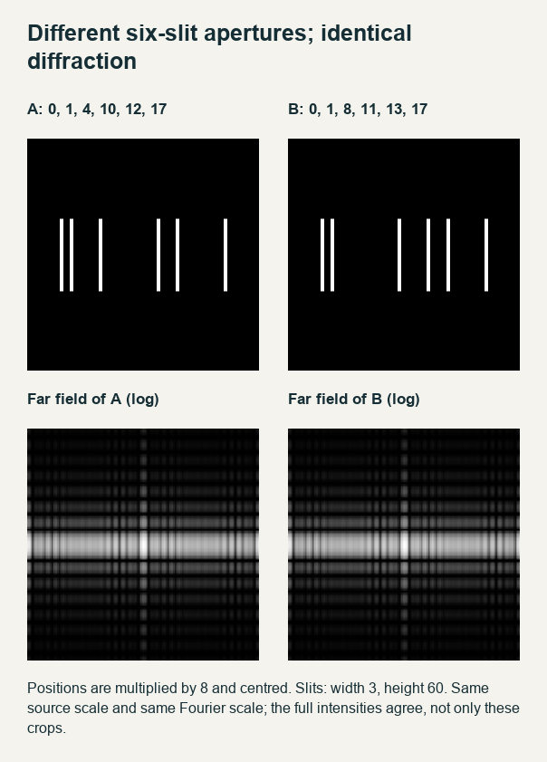
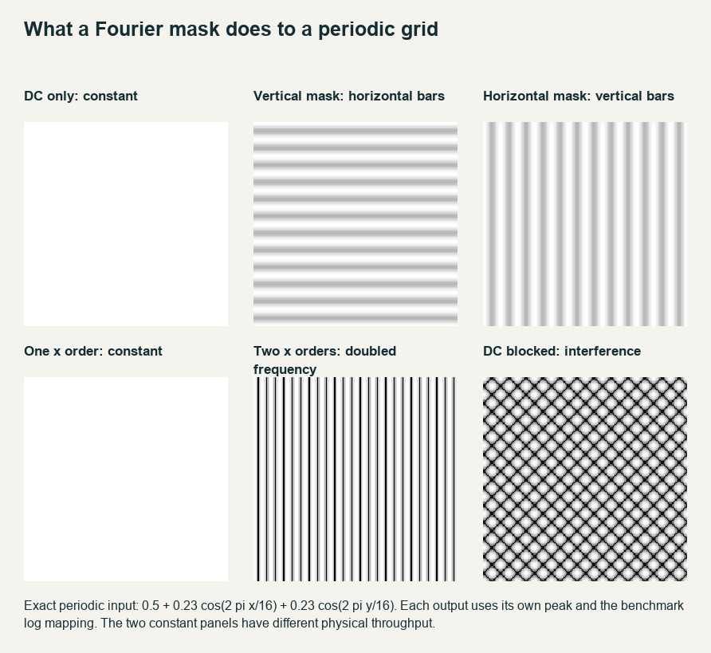

Fourier-optics benchmark: mathematical research and audit
Research cutoff: 18 November 2026. This is research alongside the pending Gate 1 review, using the existing 72 development items. No model scores, test-set results, API calls, GPU use, or paid work are involved.
The most important judgment is whether a correct answer demonstrates the intended physics: the answer must be identifiable from the supplied information, visibly distinguishable, and resistant to an unintended shortcut. An accurate FFT is necessary, but does not establish those three properties by itself.
The most directly useful recent work concerns uniqueness and stability of Fourier-magnitude measurements. I also found theoretical algorithmic progress revised on 15 November 2026, and a scientific-vision diagnostic paper revised on 14 November. The recommendations below distinguish those papers' assumptions from this benchmark's actual observations. This is a focused primary-source review, not a claim of exhaustive coverage or research novelty.
Findings that affect this project now
| Finding | Evidence from this audit | Consequence |
|---|---|---|
| Different nonnegative apertures can have exactly the same far field | A known six-slit pair agrees to 7.98e-16 of the peak; its rendered images are identical | Audit inverse answers by forward simulation; never assume a visually different aperture implies a different pattern |
| Different 4f masks can give identical intensities | Opposite off-axis holes agree to 8.35e-16 of peak intensity for an asymmetric real input | Reflection-related holes cannot be used as distinct intensity distractors in this setting |
| Display normalization removes throughput information | DC-only and single-carrier periodic outputs differ in physical intensity by 18.90 times, but display identically | Reject equivalences after the complete display mapping, too |
| Some current controls are answerable by copying | Nearest-reference matching gets 6/6 complements and 4/4 translations right; 10/30 of all applicable items | Keep these as explicit invariance controls; score more demanding reasoning separately |
| Some look-alike foils have an elementary exclusion cue | 7/12 forward foils violate the requirement that DC be a maximum for nonnegative amplitude | Foil avoidance alone is weaker evidence than full pattern prediction |
| Linear rendering can make candidate differences much smaller | Smallest 240-pixel option RMS: 0.06595 in log versus 0.00652 in linear | Run visibility controls separately in both display modes |
These findings do not establish a wrong answer in the existing Gate 1 gallery. The deliberately ambiguous examples were constructed separately, and the current generator already rejects several degeneracies. They identify what must be measured before interpreting model performance.
Recent research: what transfers, and what does not
Xia and Xu, 18 June 2026 — Fourier Phase Retrieval for Finite Unions of Intervals. This preprint is particularly close to the slit questions. Theorem 1.2 establishes uniqueness, up to translation and reflection, for indicators of one or two disjoint bounded intervals, even when the competing finite union's interval count is unknown. Theorem 1.7 constructs ambiguities for every count of three or more; it does not say every such object is ambiguous. The data are the full continuous Fourier magnitude. Cropping, normalization, quantization, and finite samples need their own audit. The paper also discusses the exceptional six-point collision-free ambiguity. Full text and theorems.
Chen, Shen and Xu, revised 15 November 2026 — Approximate Message Passing with Random Initialization for Phase Retrieval. This preprint proves long-horizon behavior for randomly initialized AMP in noiseless real phase retrieval with independent Gaussian sensing vectors. It reaches the weak recovery threshold 1/2 and the AMP strong recovery threshold approximately 1.13, with logarithmic iteration counts for the stated recovery targets. Those are measurement-to-dimension ratios in that random model, not pixel requirements for our structured Fourier images. It is valuable theory, but neither a guarantee for this benchmark nor a reason to introduce AMP into a four-candidate reference solver. Version 2 and model definition.
Ogden, Chowdhury, Tanaka and Fridovich-Keil, 1 October 2026 — Binary Phase Retrieval of Cosine Transforms via Local Curvature Minimization. This preprint exploits a real cosine transform's unknown signs using curvature of the reconstructed transform. Its “binary phase” means a sign choice, not a binary-valued aperture. It suggests a restricted even-object/cosine-transform experiment, but it does not solve general complex Fourier phase retrieval or remove our ambiguity problem. Reported reconstruction quality is empirical. Paper.
Polat, Kurban, Serpedin and Kurban, revised 14 November 2026 — Separating perception from reasoning in vision-language models: a model-free render ceiling for crystal structures. The useful idea is an inspectable intermediate between pictures and scientific labels. Its exact geometric reference receives complete species-labelled centroids, calibrated views, and a known lattice, including centroids occluded in raster images. Version 2 explicitly distinguishes this from raster readability. Our analogous diagnostic should distinguish latent simulator correctness, recovery from actual pixels, and reasoning after geometry is supplied. A solver given privileged aperture arrays is not an end-to-end image-reading ceiling. Version 2, Sections 3.1 and 4.
Hubmer, Weissinger, Ramlau and Scherzer, 25 June 2026 — On Fourier Phase Retrieval from Differential Intensity Measurements with Applications to Wavefront Sensing. This preprint derives phase equations from multiple intensity measurements with small Fourier-domain modulations, including applications to wavefront sensors. It supports a future multi-measurement extension. The extra information comes from the changed measurement, not a more elaborate interpretation of one image. This is beyond the present amplitude-only benchmark. Paper.
Peng, Han and Huang, 27 June 2025 — The Condition Number in Phase Retrieval from Intensity Measurements. This preprint studies upper and lower Lipschitz constants of the intensity map, using a lifted signal metric. It makes the relevant distinction between uniqueness and stable discrimination mathematically explicit. Its frame-dependent condition numbers are not perceptual pixel thresholds and cannot simply be assigned to our single-FFT image pipeline. The practical adaptation is to measure candidate separation after rendering and compare it with numerical and perceptual uncertainty. Paper.
Huang, Wen and Zhang, 12 September 2025 — Near-Optimal Recovery Performance of PhaseLift for Phase Retrieval from Coded Diffraction Patterns. This preprint improves noisy recovery bounds up to logarithmic factors. Its guarantees require multiple source-plane random complex masks satisfying specific moment conditions and a sufficient mask count. Our Fourier-plane amplitude filters are a different experiment. Measurement diversity is a useful future direction; neither the theorem nor its noise bounds apply to the present unmasked screenshots. Assumption 1.1 and main results.
Taaki and colleagues, Astronomical Journal, January 2026 — Efficient Exoplanet Imaging Simulations of the Habitable Worlds Observatory. This peer-reviewed application uses Bluestein FFT sampling to compute diffraction efficiently at selected resolutions and regions. Bluestein's algorithm itself is classical. It could reduce the expense of our densely sampled Fourier crops if performance becomes a bottleneck. It cannot repair unresolved aperture edges or supply missing optical information. The existing NumPy FFT remains adequate for the current review package. Paper, journal publication record.
For established uniqueness and algorithmic context, Bendory, Beinert and Eldar's 2017 review remains useful. Generic uniqueness results for multidimensional objects do not certify every deliberately structured slit, array, or separable example.
1. Formulate the task at the level of the displayed observation
Let A(r) be real nonnegative amplitude transmission, with uniform coherent illumination and r=(x,y). Use frequencies f in cycles per source unit:
F[A](f) = ∫ A(r) exp(−2π i f·r) dr
O(A) = |F[A]|²
O_M(A) = |F⁻¹[M F[A]]|² (registered coherent 4f coordinates)The model does not receive O(A). For the existing renderer, its image comes from a composition:
R(A) = resize_nearest ◦ quantize_8bit ◦ crop ◦ g ◦ normalize_peak ◦ O(A)
g(q) = log(1 + 999q) / log(1000)The order matters: the full plane sets the peak before cropping, and 8-bit quantization precedes the panel resize. A provider may apply further resampling or visual encoding. Source and mask panels use linear amplitude, not intensity. Babinet panels use their explicitly stated native-sample normalization exception.
For a finite candidate set A₁,...,A₄, inverse matching only requires choosing which rendered forward prediction matches the observation. With exact candidate arrays, an exhaustive four-way forward calculation is a computational reference. With raster-only candidates, extracting geometry and amplitude becomes part of the task and needs separate validation.
This is a classification problem over equivalence classes of observations. It does not require solving the unrestricted phase-retrieval problem. Conversely, a single ambiguous pair invalidates a forced unique answer even if a generic recovery theorem holds for almost every object.
2. Autocorrelation explains the inverse ambiguities
Expanding the squared Fourier magnitude gives the Wiener–Khinchin relationship:
F⁻¹[|F[A]|²](s) = ∫ A(r) conjugate(A(r−s)) drThus the observation determines an autocorrelation. It loses absolute translation and global phase; real objects also have the inversion ambiguity A(r) ↔ A(−r). Restricting amplitudes to [0,1] removes many complex-phase possibilities but does not remove all nontrivial ambiguities.
For identical separated elements h at positions r_j:
A(r) = Σ_j h(r−r_j)
I(f) = |F[h](f)|² · Σ_j Σ_k exp[−2π i f·(r_j−r_k)]The first factor is the single-element envelope. The second depends only on the multiset of pairwise displacement vectors. Two point arrangements with the same multiset are called homometric.
For a concrete known example, take the one-dimensional position sets:
S = {0, 1, 4, 10, 12, 17}
T = {0, 1, 8, 11, 13, 17}
Positive differences of either set = {1,2,3,4,5,6,7,8,9,10,11,12,13,16,17}The sets are neither translates nor reflections. Yet all their pair differences match, including multiplicity. Replacing each point by the same narrow rectangle gives two binary 2D apertures with the same intensity at every frequency. This proof is independent of the FFT. The audit independently verifies the integer differences and then simulates width-3, height-60 rectangles at positions 8(s−8.5). This is an illustration of a known ambiguity, not a claimed new theorem.

The FFT maximum difference divided by peak intensity is 7.98e-16; 8-bit displayed patterns are identical. No amount of zero padding or improved model reasoning can distinguish these two apertures from that observation.
As a separate extension experiment, multiplying each aperture by the same known laboratory-fixed amplitude ramp m(x)=0.6+0.4x/96 produces a displayed RMS difference of 0.06069. The mask changes the weighted pair differences and separates this pair. This is an example-specific demonstration, not a guarantee that a single ramp uniquely identifies all apertures, and not an application of the random-complex-mask PhaseLift theorem.
3. A useful independent deduction: the central lobe measures aperture covariance
Since A≥0, the triangle inequality gives:
|F[A](f)| ≤ ∫ A(r) dr = F[A](0)DC is a global intensity maximum under the stated unblocked, uniform-illumination assumptions. A pattern with a dim centre and a brighter off-axis feature cannot be the complete far field of such an aperture. This fails as a general rule for complex or sign-changing amplitude, and does not apply to DC-blocked or cropped-away axes.
Normalize A to a probability density p(r)=A(r)/∫A and let μ and Σ denote its mean and covariance, weighted by amplitude A, not A². Then F[A](f)/F[A](0) is its characteristic function. Expanding around f=0 and multiplying by its conjugate cancels the mean:
I(f)/I(0) = 1 − 4π² fᵀΣf + O(‖f‖⁴)
Hessian_f [I(f)/I(0)] at f=0 = −8π² ΣThe compact apertures here have the required moments. Their real intensity is even, so odd-order terms vanish. This explains in one calculation why translation is invisible, why increasing an object's extent narrows the central lobe, and why its principal axes matter. The direction in which the aperture spreads most has the steepest central intensity falloff. A long vertical slit therefore produces a narrow vertical frequency envelope and a broad horizontal spread.
A direct NumPy Fourier sum, separate from the FFT implementation, checked this identity on a 16×72 slit rotated 25°. Four successively halved frequency steps produced relative Hessian errors 0.008708, 0.002186, 0.000547, 0.000137. The final relative error is 1.368e-04. This checks the discrete raster measure; a continuous piecewise-constant pixel model has its own cell form factor.
This suggests an interpretable low-order feature baseline: optical-axis location, central curvature, principal axes, and fringe periods. It is a proposal, not a measured model result. It would quantify how much of the benchmark is solvable from a few geometric statistics before attributing success to richer reasoning.
The ordinary transformation laws are also explicit. For A_s(r)=A(r/s), the two-dimensional Fourier transform is s²F[A](sf), so intensity is s⁴I(sf). Own-peak normalization removes s⁴. For A_R(r)=A(R⁻¹r), intensity is I(Rᵀf). For a translation t, the transform acquires exp(−2πif·t), which disappears on taking intensity.
For N equal slits of width w, separation d and height h, the familiar factorization is:
I(fx,fy) ∝ w²h² sinc²(w fx) sinc²(h fy)
· [sin(π N d fx) / sin(π d fx)]²
sinc(t) = sin(πt)/(πt); removable singularities use their limits.The envelope zeros occur at fx=±1/w, principal array orders are spaced 1/d, and first zeros around a principal order are separated from it by 1/(Nd). Width, spacing, and count therefore control different features, though their overlap and rendering can make them hard to disentangle visually.
4. Coherent filtering contains exact intensity equivalences
For a real input, U(−f)=conjugate(U(f)). If two masks obey M₂(f)=conjugate(M₁(−f)), then:
v₂(r) = conjugate(v₁(r))
|v₂(r)|² = |v₁(r)|²For the present real amplitude masks, opposite off-axis holes satisfy this relation. An asymmetric real input does not break it. The audit verifies equality on the full padded plane to 8.35e-16 relative intensity error.
For an exact periodic teaching example, let k=2π/16 and:
u(x,y) = a + b cos(kx) + c cos(ky)
a=0.5, b=c=0.23| Fourier components passed | Output field | Output intensity |
|---|---|---|
| DC only | a | a² |
| Vertical Fourier slit, fx≈0 | a+c cos(ky) | [a+c cos(ky)]²: horizontal bars |
| Horizontal Fourier slit, fy≈0 | a+b cos(kx) | [a+b cos(kx)]²: vertical bars |
| One +x order | (b/2) exp(ikx) | b²/4: spatially constant |
| Both ±x orders, without DC | b cos(kx) | b² cos²(kx): doubled frequency |
| All grid orders except DC | b cos(kx)+c cos(ky) | Square of the sum, including interference |

All six periodic formulas agree with the independent FFT outputs to a maximum absolute error below 1.0e-15. A single isolated carrier is not a stripe intensity: discarding the complex part before squaring would produce a false stripe pattern. DC-only and one-order intensities differ by 18.90 in this example but both become uniform white under their own peak normalization.
The Gate 1 inputs are finite and tapered, so their spectral peaks have width and their outputs have envelopes. The periodic formula explains the limiting behavior; the finite-window simulation decides each actual item. The existing taper is piecewise linear, although one source-code comment calls it raised cosine. That comment should be corrected in a future audited revision; it does not change the implemented numerical window.
A second useful operator identity concerns binary masks. With a unitary Fourier transform, P_M=F⁻¹MF is an orthogonal projection when M is 0 or 1. Thus P_M²=P_M and its field energy cannot increase. Complementary masks give v+w=u and:
‖v‖² + ‖w‖² = ‖u‖²
|v+w|² = |v|² + |w|² + 2 Re(v conjugate(w))Their integrated energies add, but their pointwise intensities generally do not. Our full-plane experiment satisfies idempotence and complementary energy conservation at approximately 10⁻¹⁵, while pointwise intensity addition has RMS error 0.02662. The projection assertion is for binary masks and the full field; cropping or a gray transmission mask changes it.
5. Babinet needs a specified illumination window and sample set
With finite illumination W, complementary screens are A and W−A. Write H=F[W] and U=F[A]. Direct expansion gives:
I_complement − I_original = |H|² − 2 Re(H conjugate(U))Equal intensities follow wherever H=0. They do not follow merely from being off the central pixel. If U≠0 and η=|H|/|U|, then:
|I_complement − I_original| / |U|² ≤ η² + 2ηNear a zero of U, a small window sidelobe may still dominate the relative error. There is no universal beam-stop radius justified solely by “away from the centre.”
For the current constant 192×192 illumination square, its DFT vanishes at non-DC native bins k/192. The padded FFT includes interpolated frequencies where it does not vanish. For a radius-25 disk, the audit finds 0 maximum difference at the non-DC native bins, while the maximum over all padded non-DC samples is 251.88 times the original aperture's peak. This large value includes samples inside the finite illumination's central lobe; it demonstrates why hiding just one padded pixel is insufficient. Both comparisons use the same physical normalization.
The gallery's native-bin convention is therefore mathematically sound. Its inclusion of the original pattern also makes its complement questions copyable. Physical validity and diagnostic difficulty are separate judgments.
6. Stability must be checked after rendering
For an aperture perturbation h, the derivative of the raw intensity map is:
D O_A[h] = 2 Re(conjugate(F[A]) · F[h])It has invisible directions corresponding to translation; phase-only changes can also be locally weak. At a unique intensity peak p=I(f₀), q=I/p has derivative:
D normalize_I[δI] = [δI − q δI(f₀)] / pUniform amplitude rescaling is completely removed by own-peak normalization. At tied maxima, the peak functional need not have this ordinary derivative. Finally:
g′(q) = 999 / [(1+999q) log(1000)]
g′(0) ≈ 144.620; g′(1) ≈ 0.144620Log rendering changes the sensitivity to faint and bright structures by a factor of 1000 across this range. It is not merely cosmetic. Before resize, an 8-bit linear pixel first becomes nonzero at relative intensity about 1.961e-03; under the log mapping that transition is about 1.365e-05. Exact tie behavior depends on rounding, but not this scale comparison.
For exact rendered candidate vectors μ₁,...,μ₄ and an observation y=μ_k+e with norm(e)≤ε, nearest-candidate classification is guaranteed if:
γ_k = min(j≠k) norm(μ_k−μ_j) > 2εThe triangle inequality proves it: the correct candidate is at distance at most ε, and every other is at least γ_k−ε. If candidate templates also have independent error bounded by ε, the corresponding sufficient separation is 4ε. RMS is a scaled Euclidean norm, so the same statement applies with consistently scaled errors. Empirical padding convergence is an error estimate, not a rigorous worst-case bound or a perceptual guarantee.
The table below audits all six option pairs per item. At 240×240 it reproduces the actual option-panel quantization and nearest-neighbor resize. At 120, 60 and 30 pixels it area-averages that raster and requantizes. These smaller sizes are controlled stress tests, not a claim about any provider's preprocessing.
| Family | Log 240 px | Log 30 px | Linear 240 px | Linear 30 px |
|---|---|---|---|---|
| Forward | 0.09510 | 0.08111 | 0.00784 | 0.00701 |
| Inverse (source options) | 0.11780 | 0.08809 | 0.11780 | 0.08809 |
| Transformations | 0.10592 | 0.08223 | 0.02732 | 0.02532 |
| Slits/gratings | 0.06595 | 0.03083 | 0.01445 | 0.01019 |
| 4f filtering | 0.11429 | 0.10545 | 0.04272 | 0.03482 |
| Symmetry/complements | 0.07933 | 0.05751 | 0.00652 | 0.00559 |
No exact option collisions occurred in these audits. At 240 pixels, 9/72 linear-control items have a pair below the descriptive RMS level 0.02; none of the log items do. At 30 pixels the linear count rises to 14/72. This threshold is inherited as a diagnostic reference, not calibrated to human or model visibility. RMS comparisons alone cannot certify that a model sees a physically relevant feature. Inverse-question source options are identical between log and linear modes; their diffraction query still changes, and this option-only audit does not measure that query bottleneck.
Zero padding reduces frequency spacing Δf=1/(pNΔx) without changing the source Nyquist frequency 1/(2Δx). It interpolates the same sampled aperture's transform. It does not recover unresolved source features. Padding also reduces periodic wraparound in 4f propagation, but hard-mask impulse responses are not compactly supported, so no finite padding provides an automatic exactness guarantee. Source-grid refinement at fixed physical extent, padding convergence, analytic references, and mask-boundary sensitivity address different errors.
7. Quantify shortcut success without overstating it
The audit's nearest-reference rule selects the option with minimum RMS to an input panel labelled “Original pattern.” Selection does not inspect the question, correct answer, or metadata. Panel registration and segmentation are supplied, so this is a registered-panel diagnostic, not an end-to-end screenshot reader.
| Applicable subgroup | Correct / applicable |
|---|---|
| Translation | 4 / 4 |
| Scale and rotation | 0 / 8 |
| Slits and gratings | 0 / 12 |
| Complements | 6 / 6 |
| Total where an original pattern is shown | 10 / 30 |
This rule is not successful across the entire benchmark. It demonstrates that all ten items in two particular control subgroups can be solved by copying, without deriving the transformation. Good performance there remains useful evidence of invariance behavior, but should not be presented as equivalent to predicting a previously unseen output.
For the forward look-alike foil, the simple DC-maximum test eliminates the wrong silhouette in items 005–011, seven of twelve. It does not choose among the remaining candidates. Preserve this cheap rule as a named baseline, and decide before test generation whether the main foil analysis should also include foils that satisfy elementary physical constraints. Replacing foils after seeing model test answers would invalidate the comparison.
8. Statistical implications and a sharper foil measure
Let a=P(correct) and f=P(look-alike foil) on the foil-bearing items. Always report those unconditional rates, as requested. Also report:
q = P(foil | wrong) = f / (1−a)Under a null that spreads wrong choices uniformly among the three distractors, q=1/3. The unconditional f=1/4 null instead assumes uniform random selection among all four options. These test different claims. At accuracy 80%, f cannot exceed 20%, even if every error picks the foil. Consequently, “foil much more often than 25%” is unsuitable as the sole measure of naive attraction in a strong model. q is undefined with no errors and unstable with very few; report error counts and intervals. Treat adding q as a documented prospective analysis amendment, not a silent replacement of the existing prediction.
For paired image/text or direct/reasoned outcomes, let p₁₀=P(A correct, B wrong) and p₀₁=P(A wrong, B correct). For n independent base items:
Var(mean(A−B)) = [p₁₀+p₀₁ − (p₁₀−p₀₁)²] / nThe discordant pairs carry the evidence for the difference. Bootstrap whole base-item groups jointly across arms, display modes, forward/inverse twins, and transformations. Keep every derivative of a shared base geometry in one dev/test split. Resampling correlated variants as independent items produces overconfident intervals.
If 100 items per family means 20 dev and 80 test, a Wilson 95% interval around observed 50% accuracy has half-width 10.7 percentage points with 80 independent trials. With 100 it is 9.6 points; with ten pilot items per family it is 26.3 points. These are illustrations, not a completed power calculation; clustering can widen uncertainty further. The 60-item pilot can expose harness and visibility failures, but cannot reliably rank close per-family scores.
Equivariance consistency must map choices back to their semantic options after shuffling. It should be reported with accuracy: an equivariant but systematically wrong rule can be perfectly consistent. Likewise, a text twin that supplies exact dimensions changes the information interface, while a qualitative verbal rule may remove much of the visual inference. Neither comparison alone cleanly identifies “reasoning minus perception.”
Recommended decisions before Gate 2
- Add automated audits for both physical and rendered equivalence, including homometric candidates, translation/inversion, opposite-hole masks, and own-peak normalization. The proposed checks complement the existing inverse-spectrum rejection.
- Designate copyable translation and complement items as invariance controls. Keep separately scored non-copyable transformation and filtering items for broader reasoning claims. Make that distinction before the test set exists.
- Preserve the paired log and linear displays. Run visibility checks on the actual model-facing query and options; stratify results by visibility instead of dropping failures after the fact. Record resolution and preprocessing when available.
- Build two separately named computational references: a latent-array forward solver for simulator correctness, and a raster-input solver for the image task. A structured-geometry text arm can locate the interface bottleneck without claiming to equalize every aspect of the problem.
- Freeze base-geometry splits, balanced answer and foil positions, semantic transformation mappings, bootstrap groups, and the conditional foil statistic before the main run. Keep position-bias trials with identical options outside the accuracy denominator.
- Retain the current NumPy implementation. AMP, PhaseLift and new propagation machinery would add substantial complexity without addressing the immediate validity questions. Revisit coded measurements or phase-sensitive probes as explicit later extensions.
The four priority visual checks for the owner are the grid/slit orientation, the single-carrier envelope in off-axis examples, the readability of faint distinguishing features, and whether each look-alike foil represents a plausible misconception. The mathematical audit supports those judgments but cannot substitute for the owner's optics review or the models' visibility controls.
Reproducibility and limits
Run from the project root:
.\run-research.cmdThis regenerates the numerical audit, the two original simulation figures, this report, and its offline HTML version. It uses the same pinned NumPy 2.3.5 / Pillow 13.0.0 environment and deterministic development seed as the current gallery. Optical calculations use NumPy only. The direct-sum covariance check and exact integer difference check provide routes independent of the FFT for their respective identities.
See machine-readable results, audit code, and report builder. Results include source hashes, versions, per-item margins, and reference-matching decisions. Numerical values may differ in their last digits on another FFT/runtime platform.
The papers above establish results under their own assumptions; their proofs have not been independently re-proved here. The algebraic deductions and simulations in Sections 1–8 are my independent analysis of this project, using established Fourier identities. They are not claims of newly discovered mathematics. The scope remains scalar, ideal coherent Fourier optics and development-only diagnostics. No human or VLM perceptual thresholds, model performance, main-test conclusions, or unrestricted inverse-recovery guarantees have been established.